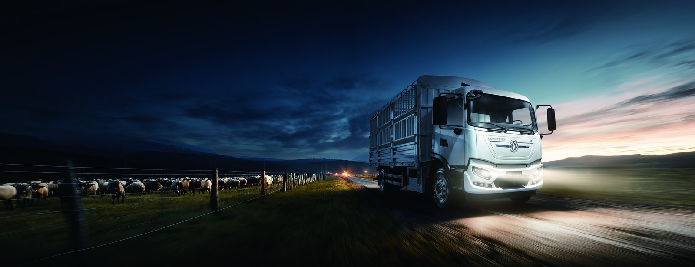

The KT5L electric truck is a 4x2 refrigerated distribution vehicle that UAE cold chain operators are adopting to cut energy cost and emissions, and the United Arab Emirates is a high-volume cold chain market where grocery, pharmacy, and food-service distributors run tight loops between Dubai, Abu Dhabi, and the northern emirates. For a refrigerated fleet, the KT5L electric cargo truck offers a compelling case, but only if operators plan around the reefer load and the summer heat. This guide explains reefer unit power draw versus range, Dubai to Abu Dhabi route planning, summer 50°C derating, charging at Dubai South and JAFZA, and the cost per pallet compared with diesel.
The KT5L is a 4x2 electric cargo truck with a 262 kWh CATL LFP pack, a 240 kW LvKong motor, GVW 18t, and a nominal range of 260 km. A belt-driven or electric stand-alone reefer draws between 3 kW and 9 kW depending on setpoint and ambient load. At a 5 kW average draw over an 8-hour shift, the refrigeration unit consumes roughly 40 kWh, about 15% of the pack. In summer, when the compressor works hardest, that share rises to 20% or more, and the effective range falls from 260 km to roughly 205 km.
| Reefer draw | Energy used 8h | Effective range |
|---|---|---|
| 3 kW (mild) | 24 kWh | 240 km |
| 5 kW (typical) | 40 kWh | 215 km |
| 9 kW (peak summer) | 72 kWh | 185 km |
The practical lesson is to size the route to the reefer load, not to the brochure range. Distributors that plan 160 km to 180 km daily loops leave margin for the compressor peak and for traffic, and they avoid mid-shift charging anxiety. The KT5L supports a 20% to 80% DC fast charge in about 55 minutes, so a lunch-break top-up easily covers a second delivery wave. Operators also learn to stage frozen goods first and chilled goods last, because the box holds temperature better when the compressor starts from a pre-cooled, well-loaded state rather than an empty, warm one.
The Dubai to Abu Dhabi corridor is about 140 km each way, well within a single charge even with a working reefer. Most cold chain operators run an out-and-back loop: load in Dubai, deliver across Abu Dhabi, return with the reefer holding setpoint on the empty leg at lower draw. Route planning should account for the fact that the return climb and the afternoon heat both raise consumption, so the conservative plan is to charge at the destination depot before the return rather than gambling on the remaining state of charge.
Because the KT5L is near-silent and produces no tailpipe, it also qualifies for early-morning residential delivery windows that diesel trucks increasingly lose to noise and emissions rules in the emirates. A distributor can therefore serve apartment blocks at 06:00 without complaint, capturing orders that a diesel rival must defer to daytime loading windows.
In July and August, ambient temperatures in the UAE interior exceed 50°C. The battery thermal management system protects the pack by trimming charge and discharge power when cell temperature exceeds the safe band, which operators experience as a modest reduction in available range and acceleration. This derating is by design and preserves the 8-year / 4,500-cycle battery warranty. The answer is operational, not mechanical: pre-cool the cargo, avoid charging at the hottest midday hour, and rely on the scheduled stop for a managed fast charge when the pack has cooled.
Fleets that follow this routine report only a 10% to 15% summer range penalty versus the temperate figure, which is far smaller than the diesel equivalent's loss to air-conditioning and cooling-system load. The KT5L thermal loop is covered under the standard warranty, and firmware updates tune the summer charge curve automatically at the depot. We advise operators to tag summer routes in the fleet portal so the dispatcher sees the derating margin and does not over-book a truck on the hottest days.
Two logistics hubs dominate UAE cold chain charging. Dubai South, beside Al Maktoum International Airport, offers depot and public DC fast charging suited to air-cargo feeder routes. JAFZA, the Jebel Ali Free Zone, concentrates food and pharma distribution and is the natural base for reefer fleets serving the port and the southern Emirates. Both locations support the KT5L's DC fast charge from 20% to 80% in 45 to 75 minutes depending on the charger rating, and both are inside the UAE electric truck market incentive zones where green logistics operators receive preferential access.
| Hub | Charge 20-80% | Best use |
|---|---|---|
| Dubai South | 45-60 min | Air-cargo feeder loops |
| JAFZA | 50-75 min | Port and pharma distribution |
We help buyers specify the on-site charger power and the cable management so that a 30-truck depot can rotate vehicles through a handful of posts without queuing. Proper depot design is what turns the KT5L from a single-truck pilot into a reliable cold chain fleet, and it is the step most first-time buyers underestimate when they budget only for the vehicle.
The headline comparison fleet managers want is cost per pallet delivered. A diesel 18t refrigerated truck in the UAE burns roughly 28 to 34 liters per 100 km, and diesel prices place energy cost near 0.42 to 0.50 USD per km before maintenance. The KT5L at commercial DC tariff and including reefer draw runs energy cost near 0.16 to 0.22 USD per km, roughly half. Brake wear is lower thanks to regen, and the electric drivetrain removes oil, filters, and many diesel-specific service items. Spread across a 20-pallet daily load, the electric truck typically saves 0.30 to 0.60 USD per pallet, and those savings compound across the FOB price band of 50k to 65k USD over a multi-year contract.
The weakest link in most UAE cold chain electrification plans is not the truck but the charger. A KT5L with a 262 kWh pack charged on a 60 kW post takes about four hours from empty, which is fine for an overnight depot but wrong for a mid-day top-up between waves. For double-wave Dubai to Abu Dhabi routes, we specify a 120 kW to 180 kW DC post so the 20% to 80% window shrinks to under an hour and the truck returns to the road before the next dispatch slot. Under-specifying the charger is the most common reason an otherwise excellent electric truck looks unreliable to the operations manager.
The depot also needs cable and cooling management suited to 50°C summer. We recommend shaded, ventilated charge bays and a load balancer that caps total site draw during the peak tariff window, shifting heavy charging to the off-peak night rate. For a fleet of fifteen KT5L units, three to four shared DC posts are usually enough because not every truck charges at the same instant; the balancer sequences them. Getting this design right is what converts the per-pallet saving described above from a spreadsheet figure into a daily operational reality, and it is the step we insist on reviewing before any UAE delivery is confirmed so that the reefer fleet never waits on a slow post.
For a typical UAE distributor running 250 km per day, the combined energy and maintenance saving reaches 8,000 to 12,000 USD per truck per year, enough to offset the electric premium within the first financing term. Add the quiet early-morning delivery window and the lower emissions levy, and the KT5L electric cargo truck becomes the lower-risk choice for a cold chain operator planning a five-year fleet refresh rather than a one-truck experiment.
Ready to electrify your fleet? Contact Shaanxi Fenghan Trading — authorized Dongfeng EV truck exporter. WhatsApp: +86 153 1943 1311 | Email: sales@fenghan-trade.com | dongfengevtrucks.com
🌐 Our Network: Fenghan Trade (SAGMOTO/SHACMAN Truck Export) · SAGMOTO cargo truck flatbed box stake